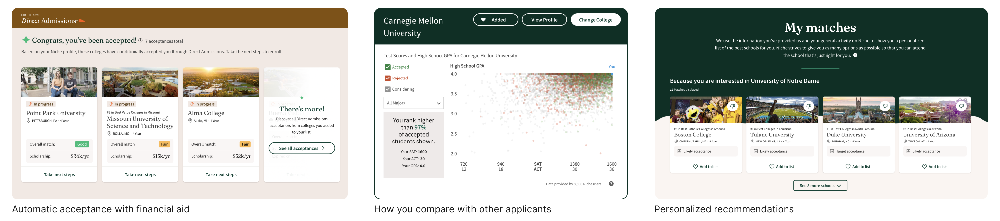

Have you signed up for a digital service recently?
In an age where we are often asked to give out personal information for simple activities like mobile ordering a taco or seeing the rest of a thread, it's easy to forget how precious personal data should be. Although it's easy to follow the trend without batting an eye, it's important to reevaluate and understand exactly what we're asking of our users.
Our registration process is lengthy, but much of it is important in tailoring the experience on Niche to the user's needs. Users weren't making it through to finish creating their accounts, and we knew we needed to take a closer look at the problem.
Diagnosing the problem
The legacy registration flow had a number of issues that stemmed beyond it being outdated and long. In user interviews, it was clear users did not understand why they were being asked so many questions just to create an account, and similarly did not see the value that Niche would provide after account creation.
The disconnect between the services we offered and how users viewed us loomed as a much larger issue. Users saw us as a way to learn about prospective schools in a very surface level way, but their capabilities on Niche abilities actually run much deeper.
The way our product was being used, users and schools were like ships passing in the night. There was a huge opportunity for us to better educate and connect users and schools directly, providing much needed value to both students and schools.
Niche partners with schools to offer acceptances and financial aid packages directly to students in a program called Direct Admissions. There are also tools like Admissions Calculator, which uses the user's test scores and GPA to give a rough idea of their chances at a specific school, and the College Compare Tool, which lets users contrast schools against each other using their own, personalized criteria.

These offerings can potentially be life-changing to students, if we can just help them past the wall that registration was posing.
Balancing quick wins with long term goals
A potentially easy solution was to eliminate the wall. If we didn't ask all these things, we can get our users to the important content they need faster right? While that seems easy, we would not be able to personalize the experience for our users in a way that we knew was crucial. We needed to find a way to help our users through, not just around.
The issue wasn't just that the flow was long and asked a lot of questions. The college search is complex and nuanced, and we wanted to make sure we were personalizing and contextualizing our offerings to each user's individual experiences.
With this in mind, we took a look at some of the ways we might attack the problem.
After careful consideration, we decided that the second and third approaches were most promising, with Approach 3 winning out because we wanted to see some more immediate wins first. We still wanted to work towards our vision of getting users in quickly and gathering information and personalizing in realtime through an engaging experience. The harsher realities were that the existing business model was relatively inflexible as of right now, but they would not be forever. REWRITE THIS PARAGRAPH
Improving direct connections
One of the reasons schools partner with us and not our competitors is that the quality of our data is much better than the rest of the field. Users who express interest in a school on our platform have a 40% chance of being enrolled at that school next year.
We wanted to make sure that more registrations did not mean lower quality data, but rather the opposite. The more users we have in our system, the more users we can educate and establish connection points between them and their potential future school. This sets students up not just to apply and get in, but also to excel once they arrive on campus.
As a two-sided marketplace, we also service the schools that our users are interested in learning about. By better understanding what schools are looking for, we can create really strong connections between the users and schools themselves, cutting out a lot of the uncertainty and nerves that accompany school searching.
Final designs
At the end of our iterations and user testing, we landed on a quiz like registration that included UX improvements to help users more easily complete account creation, as well as afforded us the opportunity to continue testing and scaling up.
Based on the user research, usability studies, and analyses we conducted, I reordered the fields to ease users through the flow. We made it easier and faster to fill things out, and now save the users' progress at every step so they can pick up where they left off.
business improvements but how can i tie this back to "users don't understand the value of niche"
Scaling for our product
While most of this project was focused on what onboarding should feel like for prospective college students since they are currently our biggest market, it was important to consider what our options might be for our other verticals, which include helping people find the best K-12 schools, areas to live, or places to work.
Previously, technical constraints restricted us to inflexible logic in how we structured the questions we asked each user at registration.
With our new work, we were able to untangle things and allow for more variability, allowing us to tailor registration flows to our different users. For example, we were able to eliminate fields for K12 registration flow in a way we could not for college.
how much we cut down k12 and how much more reg we got
By reducing almost half the questions so the experience was specific to K12, we doubled our completion rates, as well as left opportunity for our sales department to recalibrate the business plan in an area that was starting to lag.
Let's try this (and this and this and this...)
Another important piece I wanted to make sure we could do with this work was set up and continue building out A/B tests. Legacy registration had been built so manually that testing even simple things like colors was an impossible lift. Registration would be always be important, and I wanted it to be easily adaptable to new circumstances.
I built a lot of this before we officially started working on our design system, which was another good reason to keep designs as adaptable as possible. We actually used many of our A/B test learnings to inform decisions for the design system when we finally kicked it off.
Introducing high intent moments
As we continued to work towards our longer term vision of a much shorter registration process and a more customizable and personalized logged in experience,
Results and learnings
My new designs saw immediate results—improving completed registrations by 13%.
Not only did we see more overall completions, but specific design decisions also led to wins in key actions and metrics, like opting in to school communications and adding interested schools to their list.
This project served a good reminder to look back at existing services and see what can be improved. The flashy new feature will not always make the big impact you expect if users are getting hung up somewhere else. I am excited to see how the impact of this project continues to spread into other aspects of our offerings, and how we can continue to work some of this more seamlessly into our global product experience.
 hero image
hero image


 business improvements but how can i tie this back to "users don't understand the value of niche"
business improvements but how can i tie this back to "users don't understand the value of niche"
 how much we cut down k12 and how much more reg we got
how much we cut down k12 and how much more reg we got